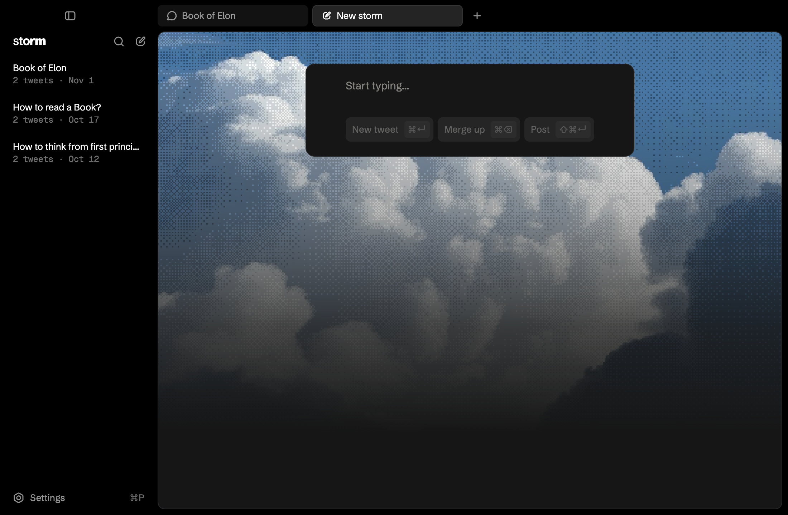
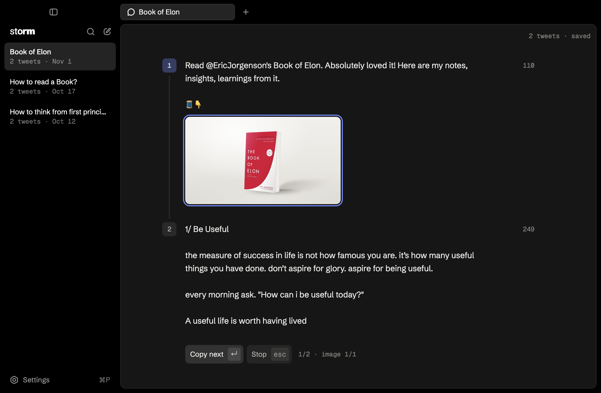
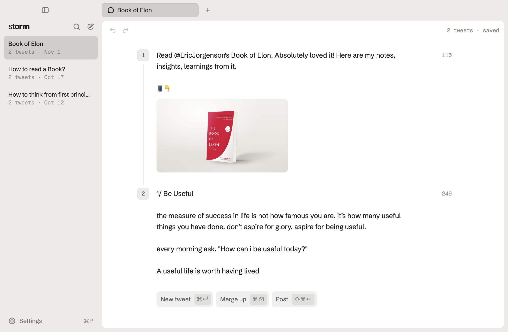
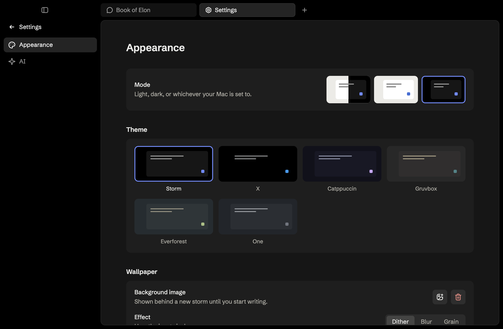

storm
The calm before.
A quiet Mac app for writing threads before you post them.
Follow the build on X for mac · not released yet
01Why
You write worse with the audience in the room.
The composer on X sits inside the feed, so every draft is written with the timeline looking on. Storm is somewhere else to write: an empty page, and nothing on it but your thread.

No feed, no replies, no numbers going up. A column of tweets and a count for each.
Every storm is a plain text file on your Mac. No account, nothing to sign in to.
Everything has a shortcut. Your hands stay on the keys from the first word to the last paste.
02Write
One thought per tweet.
A storm is a column of tweets. Each has its number on the left and its character count on the right, so you see the shape of the whole thread while you write it.
⌘↵ starts a new tweet where the cursor is. ⌘⌫ joins a tweet back onto the one above.
Drag a tweet by its number to move it. Undo and redo are kept for each storm.
Drop or paste up to four images on a tweet, and drag them into the order you want.
Storm counts the way X counts, and marks the first character that goes over.
Keep several storms open side by side in tabs, and drag the tabs into order.
⌘F finds a word in the storm you are in. ⇧⌘F searches every storm you have.
03Post
Post without losing your place.
Storm opens X with your first tweet already in the box. After that, Return copies the next tweet or image for you to paste, and Storm ticks off what is done.

Storm never posts for you. It hands you each piece in order and you paste it.
Storm never asks for your X password or an API key. There is nothing to connect.
04Files
Plain files. No account.
Every storm is a Markdown file in your Documents folder. Open it in any editor, back it up however you like, and keep it whether or not you keep Storm.
~/Documents/Storms/2026-11-01-171002.md
# Book of Elon Read @EricJorgenson's Book of Elon. Absolutely loved it! Here are my notes, insights, learnings from it.  --- 1/ Be Useful the measure of success in life is not how famous you are. it’s how many useful things you have done.
the thread above, as it is saved · a line of three dashes separates two tweets
05Look
Dark, light, or your own.
Six themes, each in light and dark. Choose a picture and it sits behind every new storm until you start writing.


06Keys
Stay on the keyboard.
Everything Storm does has a shortcut. These are all of them.
- New tweet
- ⌘↵
- Merge up
- ⌘⌫
- Delete tweet
- ⇧⌘⌫
- Post to X
- ⇧⌘↵
- Undo
- ⌘Z
- Redo
- ⇧⌘Z
- New storm
- ⌘N
- New tab
- ⌘T
- Find in storm
- ⌘F
- Search storms
- ⇧⌘F
- Sidebar
- ⌘B
- Settings
- ⌘P
Write here. Post when it is ready.
Follow the build on X for mac · not released yet